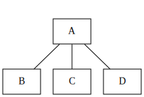
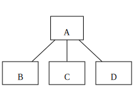
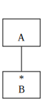
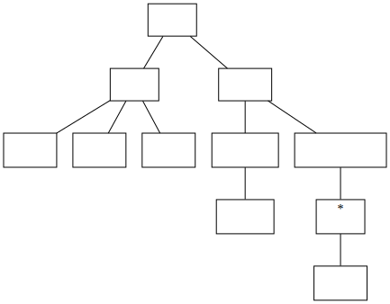
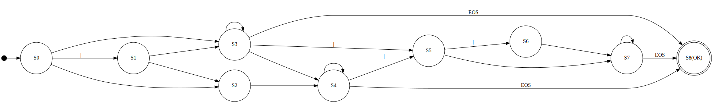
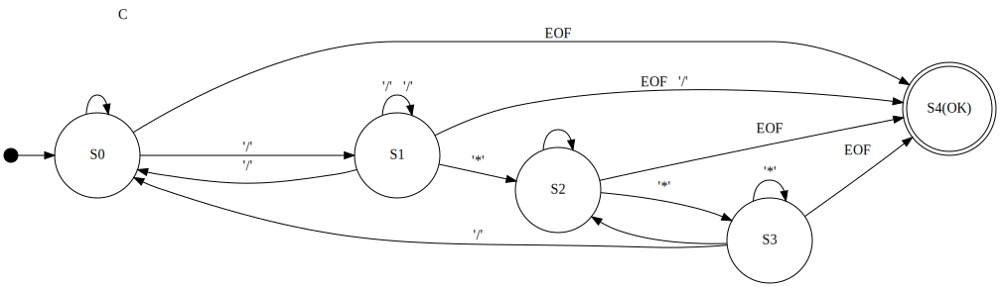

### 構造化プログラミング入門 #### 第３回 非構造化プログラミングの可能性 ------ #### USP友の会会員 鳥海 秀一 --- ### 注意 ------ #### シェル芸とは全く関係がありません --- ### 目的 ------ #### ハーラン・ミルズが上書きした #### 構造化プログラミングの定義を #### 再上書きすること --- ### 希望 ------ #### 本講義の内容を咀嚼して拡散して #### いただけると嬉しいです --- ### 謝辞 ------ #### 貴重な場を提供いただいたシェル芸 #### 勉強会の皆様に感謝いたします --- ### 講師 ------ * 名前 鳥海秀一 * 年齢 57歳 * 職業 プログラマ * 経歴 18歳のときにポケコンでプログラミングを始めて以来、約40年のプログラミングマニア --- ### 講義スケジュール ------ * 第１回 間違いだらけの構造化プログラミング * 第２回 ジャクソン流構造化プログラミング * 第３回 非構造化プログラミングの可能性 --- #### 第１回 間違いだらけの構造化プログラミング ------ #### 振り返り --- ### 間違い その１ ------ * 構造化プログラミングは構造化定理を基礎とした主張である --- ### 正解 その１ ------ * 構造化定理とはハーラン・ミルズが自身が開発したクリームルーム手法の宣伝のために、ベームとヤコピーニの証明につけた詐欺的呼称 * ダイクストラの構造化プログラミングと構造化定理は無関係 --- ### 間違い その２ ------ * ダイクストラはすべての高級プログラミング言語からgoto文を廃止すべきだと主張している --- ### 正解 その２ ------ * 主張しているのは確かだが、ダイクストラが論じていることからこの結論は出てこない * 一方でダイクストラは機械的なgotoの除去に反対している --- ### 間違い その３ ------ * 構造化プログラミングは制御の流れに関する主張である --- ### 正解 その３ ------ * 構造化プログラミングは次の２つの異なる部分から構成された主張である 1. 計算の進行とプログラムのテキストの進行を一致させるとよい 1. 変数とそれを操作する関数をひとまとめにした仮想的な機械の集合としてプログラムを構成するとよい * ダイクストラは主として後者に対して構造化プログラミングと名づけたと思われる --- #### 第２回 ジャクソン流構造化プログラミング ------ #### 振り返り --- ### ジャクソン構造化プログラムとは ------ * イギリス生まれのコンサルタントのマイケル A. ジャクソンが提案したプログラムの開発技法 * 制御の流れではなくプログラムが処理するデータの構造からプログラムの構造を導出する * データ構造の分析表記法としてジャクソン構造図を使用する --- ### ジャクソン構造図とは ------ * 次の３つの図を組み合わせてデータを表現する <br> <br> <div style="display:flex"> <div style="width:30%;background-color:white"></div> <div style="width:3%"></div> <div style="width:30%;background-color:white"></div> <div style="width:3%"></div> <div style="width:30%;background-color:white"></div> </div> --- #### 整数のジャクソン構造図による表現例 ------  --- ### ジャクソン法のまとめ ------ * ジャクソン構造化プログラミングはダイクストラの主張の１階部分によくマッチする手法 * 先読み処理はジャクソン構造化プログラミングにおいて必須の技法となっている --- ### 参考文献 ------ * 構造的プログラム設計の原理 * Michael A.Jacson著 * 1980年出版 * C言語プログラミング演習 * 日経BP社 * 2000年出版 * ずっと受けたかったソフトウェア設計の授業 * 翔泳社 * 2011年出版 --- #### 第３回 非構造化プログラミングの可能性 --- #### 構造化プログラミングの主張の要諦 ------ * ダイクストラの主張の１階部分の要諦は、プログラムのテキスト位置に適切な情報を持たせるとプログラムは理解しやすく、見やすくなるということ * 人間は位置情報に敏感に反応する生き物であり、この主張は妥当 * 但し、テキスト位置に状態を持たせすぎるとプログラムは柔軟性を失う --- ### 非構造化プログラミングとは ------ * ここでいう非構造化プログラミングとは、テキスト位置にほとんど情報をもたせないプログラミングのこと * テキスト位置に情報をもたせないと柔軟性は高くなるが、可読性を失いやすい * テキスト位置に情報をもたせないプログラミング手法に「テーブル駆動方式」がある --- ### テーブル駆動方式とは ------ * テーブル駆動方式とは、論理文の代わりにテーブルの情報を使ってプログラムを制御する方法 * 昔からよく知られた手法 * スティーブ・マコネルがその著書『コードコンプリート』で「テーブル駆動方式」という名称で紹介している * メタプログラミングと相性が良い --- ### 本日は、整数判定を題材とします --- ### 整数とは ------ * 最初に符号（＋ or -）があって、それに続けて１文字以上の数字（０〜９）が続く文字列。但し、符号は省略される場合がある。 --- ### 整数判定の状態遷移図 ------ <img src="svg/is_int.svg"/> --- #### 状態遷移図から導出したプログラム例 ------ ```c #include <stdio.h> int is_int(char *s) { goto S0; S0: if (*s == '+' || *s == '-') { s++; goto S1; } else if ('0' <= *s && *s <= '9') { s++; goto S2; } else { goto S4; } S1: if ('0' <= *s && *s <= '9') { s++; goto S2; } else { goto S4; } S2: if (*s == '\0') { goto S3; } else if ('0' <= *s && *s <= '9') { s++; goto S2; } else { goto S4; } S3: return 1; S4: return 0; } int main(void) { struct { char *s; int b; } tests[] = { { "", 0 }, { " ", 0 }, { "+", 0 }, { "-", 0 }, { "++", 0 }, { "--", 0 }, { "+0+", 0 }, { "-0-", 0 }, { "+0123456789", 1 }, { "-0123456789", 1 }, { "0123456789", 1 } }; int i; for (i = 0; i < sizeof(tests)/sizeof(*tests); i++) { printf("'%s'\t%s\n", tests[i].s, tests[i].b == is_int(tests[i].s) ? "OK" : "NG"); } return 0; } ``` --- #### 機械的にgotoを除去したプログラム例 ------ ```c #include <stdio.h> int is_int(char *s) { int state = 0; while (1) { if (state == 0) { if (*s == '+' || *s == '-') { s++; state = 1; } else if ('0' <= *s && *s <= '9') { s++; state = 2; } else { state = 4; } } else if (state == 1) { if ('0' <= *s && *s <= '9') { s++; state = 2; } else { state = 4; } } else if (state == 2) { if (*s == '\0') { state = 3; } else if ('0' <= *s && *s <= '9') { s++; state = 2; } else { state = 4; } } else if (state == 3) { return 1; } else if (state == 4) { return 0; } } } int main(void) { struct { char *s; int b; } tests[] = { { "", 0 }, { " ", 0 }, { "+", 0 }, { "-", 0 }, { "++", 0 }, { "--", 0 }, { "+0+", 0 }, { "-0-", 0 }, { "+0123456789", 1 }, { "-0123456789", 1 }, { "0123456789", 1 } }; int i; for (i = 0; i < sizeof(tests)/sizeof(*tests); i++) { printf("'%s'\t%s\n", tests[i].s, tests[i].b == is_int(tests[i].s) ? "OK" : "NG"); } return 0; } ``` --- ### 整数判定の状態遷移表 ------ | 状態 | その他 | +/- | 0〜9 | EOS | | :--- | :---: | :---: | :---: | :---: | | S0 | NG | S1 | S2 | NG | | S1 | NG | NG | S2 | NG | | S2 | NG | NG | S2 | OK | --- #### テーブル駆動方式を適用したプログラム例(C言語) ------ ```c #include <stdio.h> int next_state[][4] = { {-2, 1, 2, -2}, {-2, -2, 2, -2}, {-2, -2, 2, -1} }; int char_kind(char c) { if (c == '+' || c == '-') { return 1; } else if ('0' <= c && c <= '9') { return 2; } else if (c == '\0') { return 3; } else { return 0; } } int is_int(char *s) { int state = 0; while (state >= 0) { state = next_state[state][char_kind(*s)]; s++; } return state == -1; } int main(void) { struct { char *s; int b; } tests[] = { { "", 0 }, { " ", 0 }, { "+", 0 }, { "-", 0 }, { "++", 0 }, { "--", 0 }, { "+0+", 0 }, { "-0-", 0 }, { "+0123456789", 1 }, { "-0123456789", 1 }, { "0123456789", 1 } }; int i; for (i = 0; i < sizeof(tests)/sizeof(*tests); i++) { printf("'%s'\t%s\n", tests[i].s, tests[i].b == is_int(tests[i].s) ? "OK" : "NG"); } return 0; } ``` --- #### テーブル駆動方式を適用したプログラム例(C#) ------ ```c# using System; class is_int_table { static int[][] nextState = new int[][] { new [] {-1, 1, 2}, new [] {-1, -1, 2}, new [] {-1, -1, 2}, }; static int charKind(byte b) { if (b == '+' || b == '-') { return 1; } else if ('0' <= b && b <= '9') { return 2; } else { return 0; } } static bool IsInt(string s) { var state = 0; foreach (byte b in System.Text.Encoding.UTF8.GetBytes(s)) { state = nextState[state][charKind(b)]; if (state < 0) break; } return state == 2; } static void Main() { (string s, bool b)[] tests = { ("", false), ("+", false), ("-", false), ("++", false), ("--", false), ("+0+", false), ("-0-", false), ("+0123456789", true), ("-0123456789", true), ("0123456789", true), }; foreach (var t in tests) { Console.WriteLine("'{0}'\t{1}", t.s, t.b == IsInt(t.s) ? "OK" : "NG"); } } } ``` --- ### 演習問題 ------- * 整数判定を参考にテーブル駆動方式による浮動小数点判定のプログラムを作成してください * 下記のURLに修正元のプログラムが置いてあります * https://github.com/umidori/shellgei-59th-am/blob/main/is_float --- ### 浮動小数点数判定の状態遷移図 ------  --- #### 浮動小数点数判定の状態遷移表 ------ | 状態 | その他 | +/- | 0〜9 | 小数点 | E/e | EOS | | :--- | :---: | :---: | :---: | :---: | :---: | :---: | | S0 | NG | S1 | S3 | S2 | NG | NG | | S1 | NG | NG | S3 | S2 | NG | NG | | S2 | NG | NG | S4 | NG | NG | NG | | S3 | NG | NG | S3 | S4 | S5 | OK | | S4 | NG | NG | S4 | NG | S5 | OK | | S5 | NG | S6 | S7 | NG | NG | NG | | S6 | NG | NG | S7 | NG | NG | NG | | S7 | NG | NG | S7 | NG | NG | OK | --- ### 疑問 ------- * 異なる動作を伴う状態遷移をテーブル駆動方式ではどう扱うか？ --- ### 答え ------- * テーブルに関数を登録する --- ### 例題 C言語のコメント除去 --- #### C言語のコメント除去の状態遷移図 ------  --- #### C言語のコメント除去の状態遷移表 ------ | 状態 | その他 | / | * | EOF | | :--- | :---: | :---: | :---: | :---: | | S0 | S0/文字 | S1/- | S0/文字 | OK/- | | S1 | S0/'/'+文字 | S1/'/' | S2/- | OK/'/' | | S2 | S2/- | S2/- | S3/- | OK/- | | S3 | S2/- | S0/- | S3/- | OK/- | --- #### 状態遷移図から導出したプログラム例 ------ ```c #include <stdio.h> int main(void) { int c; goto S0; S0: if ((c = getchar()) == EOF) { goto S4; } else if (c == '/') { goto S1; } else { putchar(c); goto S0; } S1: if ((c = getchar()) == EOF) { putchar('/'); goto S4; } else if (c == '/') { putchar('/'); goto S1; } else if (c == '*') { goto S2; } else { putchar('/'); putchar(c); goto S0; } S2: if ((c = getchar()) == EOF) { goto S4; } else if (c == '*') { goto S3; } else { goto S2; } S3: if ((c = getchar()) == EOF) { goto S4; } else if (c == '*') { goto S3; } else if (c == '/') { goto S0; } else { goto S2; } S4: return 0; } ``` --- #### テーブル駆動方式によるプログラム例１ ------ ```c #include <stdio.h> int S0(int c) { if (c == EOF) { return -1; } else if (c == '/') { return 1; } else { putchar(c); return 0; } } int S1(int c) { if (c == EOF) { putchar('/'); return -1; } else if (c == '/') { putchar('/'); return 1; } else if (c == '*') { return 2; } else { putchar('/'); putchar(c); return 0; } } int S2(int c) { if (c == EOF) { return -1; } else if (c == '*') { return 3; } else { return 2; } } int S3(int c) { if (c == EOF) { return -1; } else if (c == '/') { return 0; } else if (c == '*') { return 3; } else { return 2; } } int (*next_status[])(int c) = { S0, S1, S2, S3 }; int main(void) { int state = 0; while (state >= 0) { state = next_status[state](getchar()); } return 0; } ``` --- #### テーブル駆動方式によるプログラム例２ ------ ```c #include <stdio.h> void *S0(int c); void *S1(int c); void *S2(int c); void *S3(int c); void *S0(int c) { if (c == EOF) { return NULL; } else if (c == '/') { return S1; } else { putchar(c); return S0; } } void *S1(int c) { if (c == EOF) { putchar('/'); return NULL; } else if (c == '/') { putchar('/'); return S1; } else if (c == '*') { return S2; } else { putchar('/'); putchar(c); return S0; } } void *S2(int c) { if (c == EOF) { return NULL; } else if (c == '*') { return S3; } else { return S2; } } void *S3(int c) { if (c == EOF) { return NULL; } else if (c == '/') { return S0; } else if (c == '*') { return S3; } else { return S2; } } int main(void) { void *(*f)(int) = S0; while (f != NULL) { f = f(getchar()); } return 0; } ``` --- ### テーブル駆動方式の特徴 ------ * メタプログラミングと相性が良い --- ### 例題 ------- * 浮動小数点数判定の文字判定関数をテーブル化してください --- #### 文字判定テーブルの内容を出力するプログラム例 ------ ```c #include <stdio.h> int next_state[][6] = { {-2, 1, 3, 2, -2, -2}, {-2, -2, 3, 2, -2, -2}, {-2, -2, 4, -2, -2, -2}, {-2, -2, 3, 4, 5, -1}, {-2, -2, 4, -2, 5, -1}, {-2, 6, 7, -2, -2, -2}, {-2, -2, 7, -2, -2, -2}, {-2, -2, 7, -2, -2, -1}, }; int char_kind(unsigned char c) { if (c == '+' || c == '-') { return 1; } else if ('0' <= c && c <= '9') { return 2; } else if (c == '.') { return 3; } else if (c == 'E' || c == 'e') { return 4; } else if (c == '\0') { return 5; } else { return 0; } } int main(void) { for (int i = 0; i < 256; i++) { printf("%d, ", char_kind(i)); } return 0; } ``` --- #### 文字判定関数をテーブル化した例 ------ ```c #include <stdio.h> int next_state[][6] = { {-2, 1, 3, 2, -2, -2}, {-2, -2, 3, 2, -2, -2}, {-2, -2, 4, -2, -2, -2}, {-2, -2, 3, 4, 5, -1}, {-2, -2, 4, -2, 5, -1}, {-2, 6, 7, -2, -2, -2}, {-2, -2, 7, -2, -2, -2}, {-2, -2, 7, -2, -2, -1}, }; int char_kind[] = { 5, 0, 0, 0, 0, 0, 0, 0, 0, 0, 0, 0, 0, 0, 0, 0, 0, 0, 0, 0, 0, 0, 0, 0, 0, 0, 0, 0, 0, 0, 0, 0, 0, 0, 0, 0, 0, 0, 0, 0, 0, 0, 0, 1, 0, 1, 3, 0, 2, 2, 2, 2, 2, 2, 2, 2, 2, 2, 0, 0, 0, 0, 0, 0, 0, 0, 0, 0, 0, 4, 0, 0, 0, 0, 0, 0, 0, 0, 0, 0, 0, 0, 0, 0, 0, 0, 0, 0, 0, 0, 0, 0, 0, 0, 0, 0, 0, 0, 0, 0, 0, 4, 0, 0, 0, 0, 0, 0, 0, 0, 0, 0, 0, 0, 0, 0, 0, 0, 0, 0, 0, 0, 0, 0, 0, 0, 0, 0, 0, 0, 0, 0, 0, 0, 0, 0, 0, 0, 0, 0, 0, 0, 0, 0, 0, 0, 0, 0, 0, 0, 0, 0, 0, 0, 0, 0, 0, 0, 0, 0, 0, 0, 0, 0, 0, 0, 0, 0, 0, 0, 0, 0, 0, 0, 0, 0, 0, 0, 0, 0, 0, 0, 0, 0, 0, 0, 0, 0, 0, 0, 0, 0, 0, 0, 0, 0, 0, 0, 0, 0, 0, 0, 0, 0, 0, 0, 0, 0, 0, 0, 0, 0, 0, 0, 0, 0, 0, 0, 0, 0, 0, 0, 0, 0, 0, 0, 0, 0, 0, 0, 0, 0, 0, 0, 0, 0, 0, 0, 0, 0, 0, 0, 0, 0, 0, 0, 0, 0, 0, 0, 0, 0, 0, 0, 0, 0, }; int is_float(unsigned char *s) { int state; state = 0; while (state >= 0) { state = next_state[state][char_kind[*s]]; s++; } return state == -1; } int main(void) { struct { char *s; int b; } tests[] = { {"", 0}, {"+", 0}, {"-", 0}, {".", 0}, {"+.", 0}, {"-.", 0}, {"+1+", 0}, {"-1-", 0}, {"+1", 1}, {"-1", 1}, {"1", 1}, {"+1.", 1}, {"-1.", 1}, {"1.", 1}, {"+.1", 1}, {"-.1", 1}, {".1", 1}, {"+1.1", 1}, {"-1.1", 1}, {"1.1", 1}, {"+1.1E", 0}, {"+1.1E+", 0}, {"+1.1E-", 0}, {"+1.1E.", 0}, {"+1.1E1", 1}, {"+1.1E+1", 1}, {"+1.1E-1", 1}, {"+1.1E.1", 0}, {"+1.1E1.", 0}, {"+1.1e+1", 1}, {"+1234567890.1234567890E+1234567890", 1}, }; int i; for (i = 0; i < sizeof(tests)/sizeof(*tests); i++) { printf("'%s'\t%s\n", tests[i].s, tests[i].b == is_float((unsigned char *)tests[i].s) ? "OK" : "NG"); } return 0; } ``` --- ### 演習問題 ------- * 例題で作成した浮動小数点数の文字判定テーブルと状態遷移テーブルをまとめて一つのテーブルにしてください --- #### 状態遷移テーブルの内容を出力するプログラム例 ------ ```c #include <stdio.h> int next_state[][6] = { {-2, 1, 3, 2, -2, -2}, {-2, -2, 3, 2, -2, -2}, {-2, -2, 4, -2, -2, -2}, {-2, -2, 3, 4, 5, -1}, {-2, -2, 4, -2, 5, -1}, {-2, 6, 7, -2, -2, -2}, {-2, -2, 7, -2, -2, -2}, {-2, -2, 7, -2, -2, -1}, }; int char_kind[] = { 5, 0, 0, 0, 0, 0, 0, 0, 0, 0, 0, 0, 0, 0, 0, 0, 0, 0, 0, 0, 0, 0, 0, 0, 0, 0, 0, 0, 0, 0, 0, 0, 0, 0, 0, 0, 0, 0, 0, 0, 0, 0, 0, 1, 0, 1, 3, 0, 2, 2, 2, 2, 2, 2, 2, 2, 2, 2, 0, 0, 0, 0, 0, 0, 0, 0, 0, 0, 0, 4, 0, 0, 0, 0, 0, 0, 0, 0, 0, 0, 0, 0, 0, 0, 0, 0, 0, 0, 0, 0, 0, 0, 0, 0, 0, 0, 0, 0, 0, 0, 0, 4, 0, 0, 0, 0, 0, 0, 0, 0, 0, 0, 0, 0, 0, 0, 0, 0, 0, 0, 0, 0, 0, 0, 0, 0, 0, 0, 0, 0, 0, 0, 0, 0, 0, 0, 0, 0, 0, 0, 0, 0, 0, 0, 0, 0, 0, 0, 0, 0, 0, 0, 0, 0, 0, 0, 0, 0, 0, 0, 0, 0, 0, 0, 0, 0, 0, 0, 0, 0, 0, 0, 0, 0, 0, 0, 0, 0, 0, 0, 0, 0, 0, 0, 0, 0, 0, 0, 0, 0, 0, 0, 0, 0, 0, 0, 0, 0, 0, 0, 0, 0, 0, 0, 0, 0, 0, 0, 0, 0, 0, 0, 0, 0, 0, 0, 0, 0, 0, 0, 0, 0, 0, 0, 0, 0, 0, 0, 0, 0, 0, 0, 0, 0, 0, 0, 0, 0, 0, 0, 0, 0, 0, 0, 0, 0, 0, 0, 0, 0, 0, 0, 0, 0, 0, 0, }; int main(void) { for (int i = 0; i < 8; i++) { printf("{"); for (int j = 0; j < 256; j++) { printf("%d, ", next_state[i][char_kind[j]]); } printf("},\n"); } } ``` --- #### テーブルを一つにまとめたプログラム例 ------ ```c #include <stdio.h> int next_state[][256] = { { -2, -2, -2, -2, -2, -2, -2, -2, -2, -2, -2, -2, -2, -2, -2, -2, -2, -2, -2, -2, -2, -2, -2, -2, -2, -2, -2, -2, -2, -2, -2, -2, -2, -2, -2, -2, -2, -2, -2, -2, -2, -2, -2, 1, -2, 1, 2, -2, 3, 3, 3, 3, 3, 3, 3, 3, 3, 3, -2, -2, -2, -2, -2, -2, -2, -2, -2, -2, -2, -2, -2, -2, -2, -2, -2, -2, -2, -2, -2, -2, -2, -2, -2, -2, -2, -2, -2, -2, -2, -2, -2, -2, -2, -2, -2, -2, -2, -2, -2, -2, -2, -2, -2, -2, -2, -2, -2, -2, -2, -2, -2, -2, -2, -2, -2, -2, -2, -2, -2, -2, -2, -2, -2, -2, -2, -2, -2, -2, -2, -2, -2, -2, -2, -2, -2, -2, -2, -2, -2, -2, -2, -2, -2, -2, -2, -2, -2, -2, -2, -2, -2, -2, -2, -2, -2, -2, -2, -2, -2, -2, -2, -2, -2, -2, -2, -2, -2, -2, -2, -2, -2, -2, -2, -2, -2, -2, -2, -2, -2, -2, -2, -2, -2, -2, -2, -2, -2, -2, -2, -2, -2, -2, -2, -2, -2, -2, -2, -2, -2, -2, -2, -2, -2, -2, -2, -2, -2, -2, -2, -2, -2, -2, -2, -2, -2, -2, -2, -2, -2, -2, -2, -2, -2, -2, -2, -2, -2, -2, -2, -2, -2, -2, -2, -2, -2, -2, -2, -2, -2, -2, -2, -2, -2, -2, -2, -2, -2, -2, -2, -2, -2, -2, -2, -2, -2, -2, }, { -2, -2, -2, -2, -2, -2, -2, -2, -2, -2, -2, -2, -2, -2, -2, -2, -2, -2, -2, -2, -2, -2, -2, -2, -2, -2, -2, -2, -2, -2, -2, -2, -2, -2, -2, -2, -2, -2, -2, -2, -2, -2, -2, -2, -2, -2, 2, -2, 3, 3, 3, 3, 3, 3, 3, 3, 3, 3, -2, -2, -2, -2, -2, -2, -2, -2, -2, -2, -2, -2, -2, -2, -2, -2, -2, -2, -2, -2, -2, -2, -2, -2, -2, -2, -2, -2, -2, -2, -2, -2, -2, -2, -2, -2, -2, -2, -2, -2, -2, -2, -2, -2, -2, -2, -2, -2, -2, -2, -2, -2, -2, -2, -2, -2, -2, -2, -2, -2, -2, -2, -2, -2, -2, -2, -2, -2, -2, -2, -2, -2, -2, -2, -2, -2, -2, -2, -2, -2, -2, -2, -2, -2, -2, -2, -2, -2, -2, -2, -2, -2, -2, -2, -2, -2, -2, -2, -2, -2, -2, -2, -2, -2, -2, -2, -2, -2, -2, -2, -2, -2, -2, -2, -2, -2, -2, -2, -2, -2, -2, -2, -2, -2, -2, -2, -2, -2, -2, -2, -2, -2, -2, -2, -2, -2, -2, -2, -2, -2, -2, -2, -2, -2, -2, -2, -2, -2, -2, -2, -2, -2, -2, -2, -2, -2, -2, -2, -2, -2, -2, -2, -2, -2, -2, -2, -2, -2, -2, -2, -2, -2, -2, -2, -2, -2, -2, -2, -2, -2, -2, -2, -2, -2, -2, -2, -2, -2, -2, -2, -2, -2, -2, -2, -2, -2, -2, -2, }, { -2, -2, -2, -2, -2, -2, -2, -2, -2, -2, -2, -2, -2, -2, -2, -2, -2, -2, -2, -2, -2, -2, -2, -2, -2, -2, -2, -2, -2, -2, -2, -2, -2, -2, -2, -2, -2, -2, -2, -2, -2, -2, -2, -2, -2, -2, -2, -2, 4, 4, 4, 4, 4, 4, 4, 4, 4, 4, -2, -2, -2, -2, -2, -2, -2, -2, -2, -2, -2, -2, -2, -2, -2, -2, -2, -2, -2, -2, -2, -2, -2, -2, -2, -2, -2, -2, -2, -2, -2, -2, -2, -2, -2, -2, -2, -2, -2, -2, -2, -2, -2, -2, -2, -2, -2, -2, -2, -2, -2, -2, -2, -2, -2, -2, -2, -2, -2, -2, -2, -2, -2, -2, -2, -2, -2, -2, -2, -2, -2, -2, -2, -2, -2, -2, -2, -2, -2, -2, -2, -2, -2, -2, -2, -2, -2, -2, -2, -2, -2, -2, -2, -2, -2, -2, -2, -2, -2, -2, -2, -2, -2, -2, -2, -2, -2, -2, -2, -2, -2, -2, -2, -2, -2, -2, -2, -2, -2, -2, -2, -2, -2, -2, -2, -2, -2, -2, -2, -2, -2, -2, -2, -2, -2, -2, -2, -2, -2, -2, -2, -2, -2, -2, -2, -2, -2, -2, -2, -2, -2, -2, -2, -2, -2, -2, -2, -2, -2, -2, -2, -2, -2, -2, -2, -2, -2, -2, -2, -2, -2, -2, -2, -2, -2, -2, -2, -2, -2, -2, -2, -2, -2, -2, -2, -2, -2, -2, -2, -2, -2, -2, -2, -2, -2, -2, -2, -2, }, { -1, -2, -2, -2, -2, -2, -2, -2, -2, -2, -2, -2, -2, -2, -2, -2, -2, -2, -2, -2, -2, -2, -2, -2, -2, -2, -2, -2, -2, -2, -2, -2, -2, -2, -2, -2, -2, -2, -2, -2, -2, -2, -2, -2, -2, -2, 4, -2, 3, 3, 3, 3, 3, 3, 3, 3, 3, 3, -2, -2, -2, -2, -2, -2, -2, -2, -2, -2, -2, 5, -2, -2, -2, -2, -2, -2, -2, -2, -2, -2, -2, -2, -2, -2, -2, -2, -2, -2, -2, -2, -2, -2, -2, -2, -2, -2, -2, -2, -2, -2, -2, 5, -2, -2, -2, -2, -2, -2, -2, -2, -2, -2, -2, -2, -2, -2, -2, -2, -2, -2, -2, -2, -2, -2, -2, -2, -2, -2, -2, -2, -2, -2, -2, -2, -2, -2, -2, -2, -2, -2, -2, -2, -2, -2, -2, -2, -2, -2, -2, -2, -2, -2, -2, -2, -2, -2, -2, -2, -2, -2, -2, -2, -2, -2, -2, -2, -2, -2, -2, -2, -2, -2, -2, -2, -2, -2, -2, -2, -2, -2, -2, -2, -2, -2, -2, -2, -2, -2, -2, -2, -2, -2, -2, -2, -2, -2, -2, -2, -2, -2, -2, -2, -2, -2, -2, -2, -2, -2, -2, -2, -2, -2, -2, -2, -2, -2, -2, -2, -2, -2, -2, -2, -2, -2, -2, -2, -2, -2, -2, -2, -2, -2, -2, -2, -2, -2, -2, -2, -2, -2, -2, -2, -2, -2, -2, -2, -2, -2, -2, -2, -2, -2, -2, -2, -2, -2, }, { -1, -2, -2, -2, -2, -2, -2, -2, -2, -2, -2, -2, -2, -2, -2, -2, -2, -2, -2, -2, -2, -2, -2, -2, -2, -2, -2, -2, -2, -2, -2, -2, -2, -2, -2, -2, -2, -2, -2, -2, -2, -2, -2, -2, -2, -2, -2, -2, 4, 4, 4, 4, 4, 4, 4, 4, 4, 4, -2, -2, -2, -2, -2, -2, -2, -2, -2, -2, -2, 5, -2, -2, -2, -2, -2, -2, -2, -2, -2, -2, -2, -2, -2, -2, -2, -2, -2, -2, -2, -2, -2, -2, -2, -2, -2, -2, -2, -2, -2, -2, -2, 5, -2, -2, -2, -2, -2, -2, -2, -2, -2, -2, -2, -2, -2, -2, -2, -2, -2, -2, -2, -2, -2, -2, -2, -2, -2, -2, -2, -2, -2, -2, -2, -2, -2, -2, -2, -2, -2, -2, -2, -2, -2, -2, -2, -2, -2, -2, -2, -2, -2, -2, -2, -2, -2, -2, -2, -2, -2, -2, -2, -2, -2, -2, -2, -2, -2, -2, -2, -2, -2, -2, -2, -2, -2, -2, -2, -2, -2, -2, -2, -2, -2, -2, -2, -2, -2, -2, -2, -2, -2, -2, -2, -2, -2, -2, -2, -2, -2, -2, -2, -2, -2, -2, -2, -2, -2, -2, -2, -2, -2, -2, -2, -2, -2, -2, -2, -2, -2, -2, -2, -2, -2, -2, -2, -2, -2, -2, -2, -2, -2, -2, -2, -2, -2, -2, -2, -2, -2, -2, -2, -2, -2, -2, -2, -2, -2, -2, -2, -2, -2, -2, -2, -2, -2, -2, }, { -2, -2, -2, -2, -2, -2, -2, -2, -2, -2, -2, -2, -2, -2, -2, -2, -2, -2, -2, -2, -2, -2, -2, -2, -2, -2, -2, -2, -2, -2, -2, -2, -2, -2, -2, -2, -2, -2, -2, -2, -2, -2, -2, 6, -2, 6, -2, -2, 7, 7, 7, 7, 7, 7, 7, 7, 7, 7, -2, -2, -2, -2, -2, -2, -2, -2, -2, -2, -2, -2, -2, -2, -2, -2, -2, -2, -2, -2, -2, -2, -2, -2, -2, -2, -2, -2, -2, -2, -2, -2, -2, -2, -2, -2, -2, -2, -2, -2, -2, -2, -2, -2, -2, -2, -2, -2, -2, -2, -2, -2, -2, -2, -2, -2, -2, -2, -2, -2, -2, -2, -2, -2, -2, -2, -2, -2, -2, -2, -2, -2, -2, -2, -2, -2, -2, -2, -2, -2, -2, -2, -2, -2, -2, -2, -2, -2, -2, -2, -2, -2, -2, -2, -2, -2, -2, -2, -2, -2, -2, -2, -2, -2, -2, -2, -2, -2, -2, -2, -2, -2, -2, -2, -2, -2, -2, -2, -2, -2, -2, -2, -2, -2, -2, -2, -2, -2, -2, -2, -2, -2, -2, -2, -2, -2, -2, -2, -2, -2, -2, -2, -2, -2, -2, -2, -2, -2, -2, -2, -2, -2, -2, -2, -2, -2, -2, -2, -2, -2, -2, -2, -2, -2, -2, -2, -2, -2, -2, -2, -2, -2, -2, -2, -2, -2, -2, -2, -2, -2, -2, -2, -2, -2, -2, -2, -2, -2, -2, -2, -2, -2, -2, -2, -2, -2, -2, -2, }, { -2, -2, -2, -2, -2, -2, -2, -2, -2, -2, -2, -2, -2, -2, -2, -2, -2, -2, -2, -2, -2, -2, -2, -2, -2, -2, -2, -2, -2, -2, -2, -2, -2, -2, -2, -2, -2, -2, -2, -2, -2, -2, -2, -2, -2, -2, -2, -2, 7, 7, 7, 7, 7, 7, 7, 7, 7, 7, -2, -2, -2, -2, -2, -2, -2, -2, -2, -2, -2, -2, -2, -2, -2, -2, -2, -2, -2, -2, -2, -2, -2, -2, -2, -2, -2, -2, -2, -2, -2, -2, -2, -2, -2, -2, -2, -2, -2, -2, -2, -2, -2, -2, -2, -2, -2, -2, -2, -2, -2, -2, -2, -2, -2, -2, -2, -2, -2, -2, -2, -2, -2, -2, -2, -2, -2, -2, -2, -2, -2, -2, -2, -2, -2, -2, -2, -2, -2, -2, -2, -2, -2, -2, -2, -2, -2, -2, -2, -2, -2, -2, -2, -2, -2, -2, -2, -2, -2, -2, -2, -2, -2, -2, -2, -2, -2, -2, -2, -2, -2, -2, -2, -2, -2, -2, -2, -2, -2, -2, -2, -2, -2, -2, -2, -2, -2, -2, -2, -2, -2, -2, -2, -2, -2, -2, -2, -2, -2, -2, -2, -2, -2, -2, -2, -2, -2, -2, -2, -2, -2, -2, -2, -2, -2, -2, -2, -2, -2, -2, -2, -2, -2, -2, -2, -2, -2, -2, -2, -2, -2, -2, -2, -2, -2, -2, -2, -2, -2, -2, -2, -2, -2, -2, -2, -2, -2, -2, -2, -2, -2, -2, -2, -2, -2, -2, -2, -2, }, { -1, -2, -2, -2, -2, -2, -2, -2, -2, -2, -2, -2, -2, -2, -2, -2, -2, -2, -2, -2, -2, -2, -2, -2, -2, -2, -2, -2, -2, -2, -2, -2, -2, -2, -2, -2, -2, -2, -2, -2, -2, -2, -2, -2, -2, -2, -2, -2, 7, 7, 7, 7, 7, 7, 7, 7, 7, 7, -2, -2, -2, -2, -2, -2, -2, -2, -2, -2, -2, -2, -2, -2, -2, -2, -2, -2, -2, -2, -2, -2, -2, -2, -2, -2, -2, -2, -2, -2, -2, -2, -2, -2, -2, -2, -2, -2, -2, -2, -2, -2, -2, -2, -2, -2, -2, -2, -2, -2, -2, -2, -2, -2, -2, -2, -2, -2, -2, -2, -2, -2, -2, -2, -2, -2, -2, -2, -2, -2, -2, -2, -2, -2, -2, -2, -2, -2, -2, -2, -2, -2, -2, -2, -2, -2, -2, -2, -2, -2, -2, -2, -2, -2, -2, -2, -2, -2, -2, -2, -2, -2, -2, -2, -2, -2, -2, -2, -2, -2, -2, -2, -2, -2, -2, -2, -2, -2, -2, -2, -2, -2, -2, -2, -2, -2, -2, -2, -2, -2, -2, -2, -2, -2, -2, -2, -2, -2, -2, -2, -2, -2, -2, -2, -2, -2, -2, -2, -2, -2, -2, -2, -2, -2, -2, -2, -2, -2, -2, -2, -2, -2, -2, -2, -2, -2, -2, -2, -2, -2, -2, -2, -2, -2, -2, -2, -2, -2, -2, -2, -2, -2, -2, -2, -2, -2, -2, -2, -2, -2, -2, -2, -2, -2, -2, -2, -2, -2, }, }; int is_float(unsigned char *s) { int state; state = 0; while (state >= 0) { state = next_state[state][*s]; s++; } return state == -1; } int main(void) { struct { char *s; int b; } tests[] = { {"", 0}, {"+", 0}, {"-", 0}, {".", 0}, {"+.", 0}, {"-.", 0}, {"+1+", 0}, {"-1-", 0}, {"+1", 1}, {"-1", 1}, {"1", 1}, {"+1.", 1}, {"-1.", 1}, {"1.", 1}, {"+.1", 1}, {"-.1", 1}, {".1", 1}, {"+1.1", 1}, {"-1.1", 1}, {"1.1", 1}, {"+1.1E", 0}, {"+1.1E+", 0}, {"+1.1E-", 0}, {"+1.1E.", 0}, {"+1.1E1", 1}, {"+1.1E+1", 1}, {"+1.1E-1", 1}, {"+1.1E.1", 0}, {"+1.1E1.", 0}, {"+1.1e+1", 1}, {"+1234567890.1234567890E+1234567890", 1}, }; int i; for (i = 0; i < sizeof(tests)/sizeof(*tests); i++) { printf("'%s'\t%s\n", tests[i].s, tests[i].b == is_float((unsigned char *)tests[i].s) ? "OK" : "NG"); } return 0; } ``` --- ### テーブル駆動方式まとめ ------ * テーブル駆動方式はプログラムを作成する際の強力なツール * 動的に動作を変更する必要がある場合は、真っ先に考慮すべき * この手法を用いる場合は、ソース以外のドキュメントを用意した方が良い * やりすぎるとソースからプログラムの動作を理解することが困難となる --- ### 講義を終えるにあたって ------ * ハーラン・ミルズの呪いを解くにはgotoを使ってみるのが一番 * ハーラン・ミルズの呪いがもたらす一番の厄災は教育に目線がいかなくなること * ルールで縛ればダメなプログラマでも少しはマシなプログラムが書けるという妄想から自由になろう --- ### 最後に ------ * 教育に着目してみると、どういう方法がプログラム教育には適しているのかという議論をもっとして良い * シェル芸勉強会（午後の部）の手法は教育手法として注目に値する --- ### ご視聴ありがとうござました